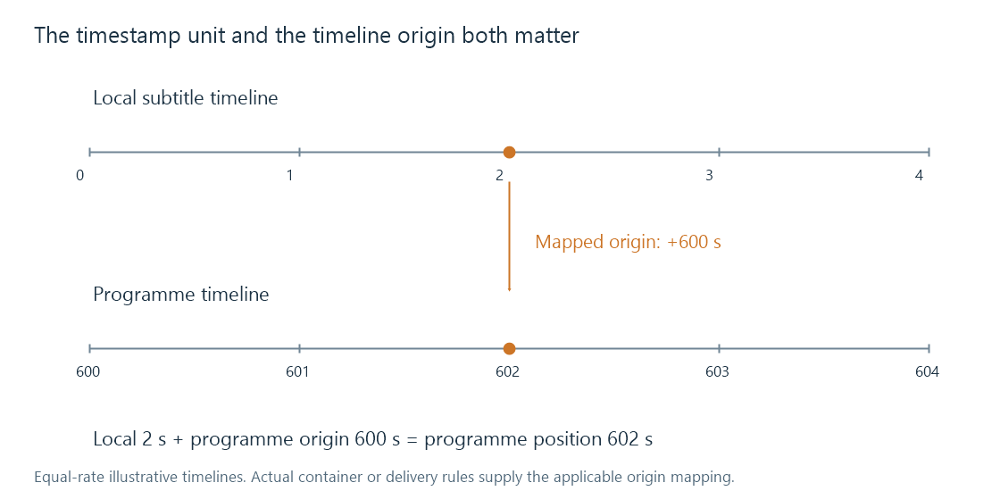

Subtitle timestamps
Subtitle timestamps express presentation positions whose meaning depends on their syntax, unit, time base and timeline origin.
A subtitle timestamp means when to present content on an applicable timeline. Its digits alone are not enough: the syntax establishes units, and the surrounding format or delivery establishes the time base and origin.
A cue can be correctly parsed and still land in the wrong scene if the wrong origin is applied.
The last field can mean different things
| Representation | Interpretation |
|---|---|
SRT 00:00:12,500 |
12 seconds plus 500 milliseconds |
WebVTT 00:00:12.500 |
The same 12.5 seconds |
ASS 0:00:12.50 |
12 seconds plus 50 hundredths, also 12.5 seconds |
TTML offset 12.5s |
A 12.5-second offset in its applicable timing context |
TTML frame offset 300f |
300 frames, interpreted using the declared rate |
Container timestamp 1125000 at 90,000 ticks/s |
12.5 seconds before any additional origin mapping |
The fraction's number of decimal digits matters. .050 seconds is 50 ms; .50 seconds is 500 ms. Neither should be read as “fifty frames” simply because a field follows a separator.
A clock expression with a frame field uses its format's frame-rate rules. Copying the textual punctuation into another format is not sufficient conversion.
A time base turns integers into duration
On a 90,000-tick-per-second scale:
1,125,000 ticks / 90,000 ticks per second = 12.5 seconds
225,000 ticks / 90,000 ticks per second = 2.5 seconds
The first can be a cue's start; the second can be its duration. Raw numbers from a 1,000-unit-per-second track are much smaller for the same times. The time base establishes that numerical interpretation.
The relevant presentation timestamp is also distinct from a packet's arrival time or a decode-order timestamp. Preparing an image ahead of its display time should not make the subtitle appear ahead of the scene.
Local time needs a timeline origin
Suppose a delivered subtitle item starts at 2 seconds on a local timeline whose origin is programme time 600 seconds. Its programme position is:
programme time = local time + mapped origin
= 2 + 600
= 602 seconds

Displaying it at movie time 2 seconds would be an origin error, not a failure to parse its decimal fraction.
Container track timing, edit mappings or a segmented delivery convention can supply that relationship. Nested TTML timing can similarly change the reference of a child's time expression. A reader must apply the applicable mapping rather than guessing that every timestamp is measured from the start of the complete movie.
For an Emby extraction or conversion comparison, convert the original and resulting times to a common programme timeline. That makes it possible to distinguish rounding, an offset, a rate change and an origin mismatch without interpreting different raw tick values as different scenes.
Numerical precision and actual synchronization
SRT records milliseconds; ASS event timestamps commonly record hundredths. Rounding a source time to the nearest hundredth can change it by up to 5 ms. That quantization is a different scale of problem from a subtitle arriving several seconds before speech.
Likewise, a file with three fraction digits is not guaranteed to be authored accurately to a millisecond. Its representation can express a precision greater than the timing decision actually used.